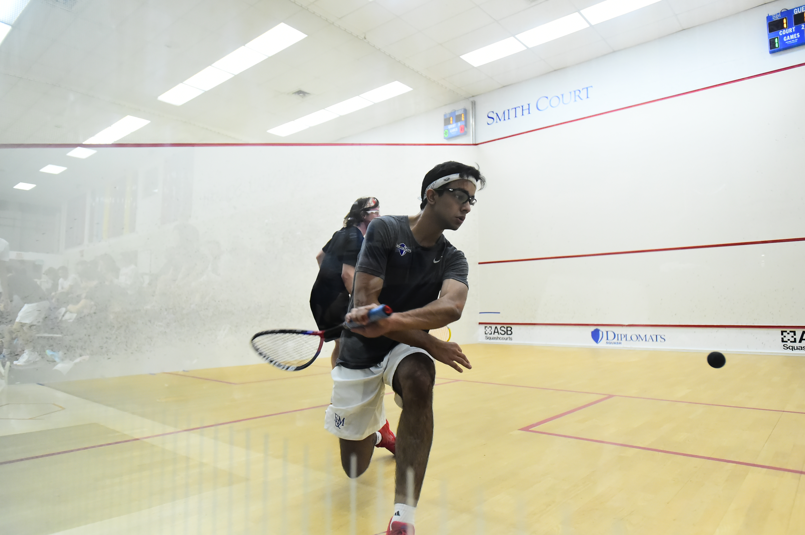

|
About me
My name is Raunak Advani (ra1113) and I am currently an Undergraduate Economics Major at Georgetown University and a student in the Accelerated MS in Data Science & Analytics Program. My current goals include improving my technical and data analysis skills, which is why I decided to pursue the Masters Program in Data Science & Analytics. As an Economics student, I am constantly working with several types of data, but being able to clean and analyze the relevant data is something that I would like to work on. Outside of the classroom, my interests include squash, speed-cubing, meditation, and skiing.
|

|
Academic Interests
Econometrical Data Analysis
Deep Learning
Statistical Computing
Artificial Intelligence
|
Education
2024: Georgetown University (MS in Data Science & Analytics)
2023: Georgetown University (BA in Economics)
2019: The Taft School (High School Diploma)
|
Other Interests
Squash (Nationally Ranked in India)
Yoga and Meditation
Hiking
House Music
|
The following text will help you get to know me better. Born in Mumbai, India, and bred in high school in Watertown, Connecticut, I always found myself having have edge towards quantitative subjects, particularly Mathematics and Physics. This inspired me to take multiple courses in Computer Science, including Web Application Development, Game Design using Java, and AP Computer Science. My bold decision to take the leap of faith on a squash scholarship to the Taft School in Watertown, Connecticut introduced me to my ability to take life head on, becoming responsible for my every action at the young age of 15. The hurdles that came along the way, were the lathe that honed my confidence and resolve to achieve. This fervour to prove my mettle to myself saw me transcending academically, leading my team to several victories, maintaining our National rank as Squash Team Captain and then sharing my skills to coach underprivileged children in the Connecticut region.
Having been an athlete my entire life, I have learnt to apply the several life skills from sport to my everyday. Be it the qualities of hard work, discipline, determination, teamwork, and several others required to excel at a sport, I have taken these to every aspect of my life outside of sport. Particularly, inside the classroom and in everyday life situations, I found myself being able to apply all these life lessons in ways that made me ease through the hardest moments in life. As an Economics major at Georgetown, I was constantly challenged by dry, tedious theory based classes. These courses were originally boring to me, but I eventually saw through them by justifying how they would later help me on when I took Economics electives, and could actually apply those theories to real life and concepts that truly did intrigue me. After taking Econometrics and a Computer Science class last spring, I restarted coding after a hiatus of almost 2 years. This gave me a fire in my belly to seek knowledge outside of Economics, particularly in something that was connected to Economics but also had a technical and coding component to it. I was thus led to the Accelerated Masters Program in Data Science at Georgetown.
Taking this leap of faith into the accelerated program was one that wasn't easy for me. Considering that it was a relatively new program, and that I did not know how well I'd be able to manage the master's classes, taking an extra year of school has been a risky decision. However, I'm certain that this program will allow me technical and professional skills to flourish, give me more time to decide what industry I'd like to begin my career in, and ultimately allow me to truly pursue what I'm interested in. I hope you gain some new knowledge by going through my portfolio!